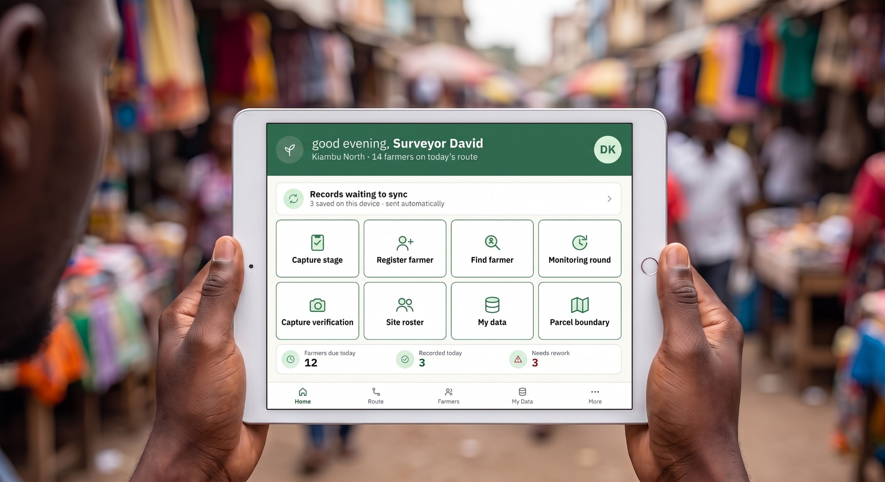
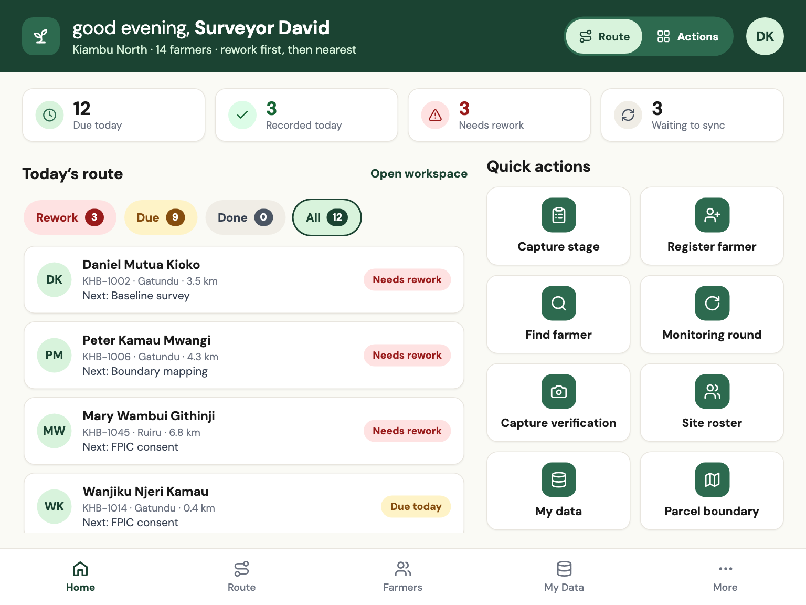
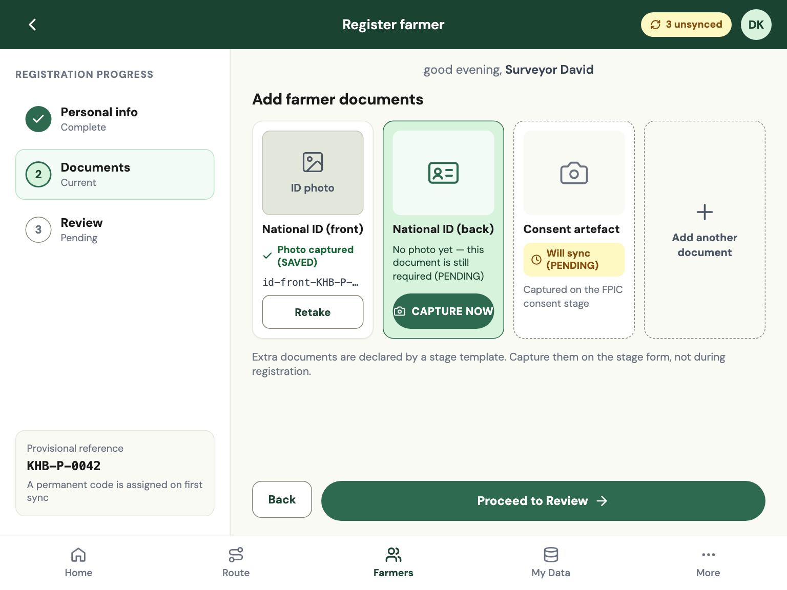
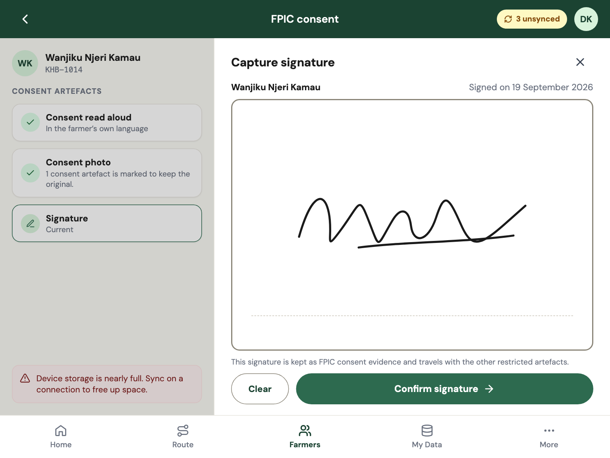
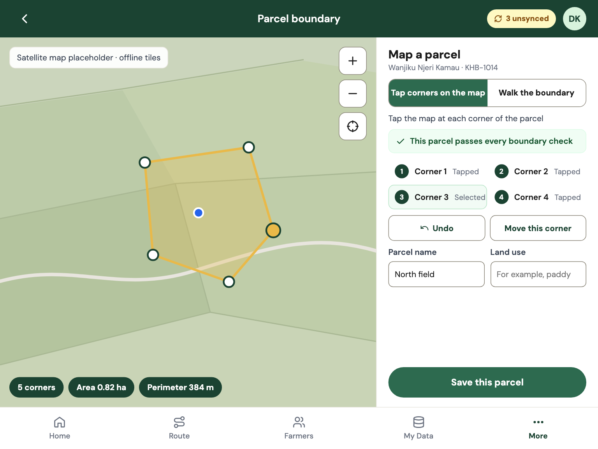
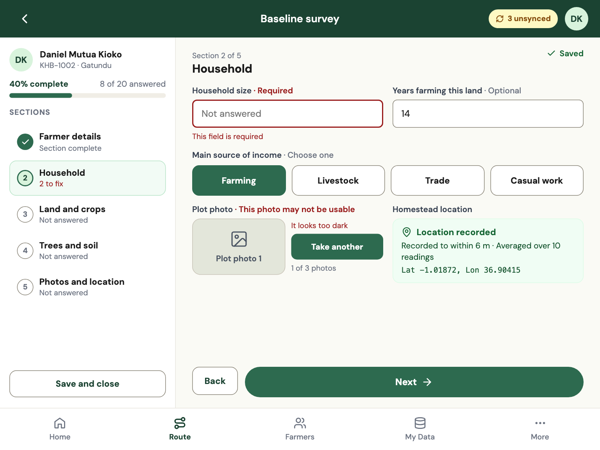
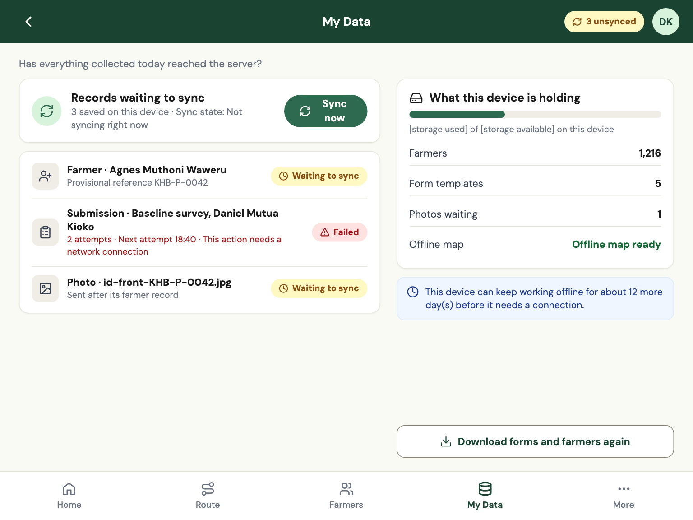

In development · Mobile app + sync backend
Carbon Field
An offline-first mobile app and sync backend for carbon project field data. Surveyors register farmers, capture consent, map parcels and run monitoring rounds with no signal. Supervisors review every record before it counts.
Why it needs building
A farmer is not a survey response.
Most field tools save every visit as a separate form. The baseline survey in March, the consent in April and the monitoring visit in October never meet, and the evidence trail breaks before a verifier ever opens it.
Carbon Field starts from a registry instead. Every farmer gets one record, and every stage of the project hangs off it: who they are, what they agreed to, where their land is, and what changed on it, round after round.
- One record per farmer, from baseline to the last monitoring round
- Evidence checked at capture, while the surveyor is still on the farm
- Built to work for weeks without a connection

What is in the app
Screens from the current tablet design. Names and numbers shown are sample data.

Home
The day opens on a route
Who needs a visit, what is due, what came back for rework and what is still waiting to sync. Rework comes first, then the nearest farmer. A surveyor who prefers big action buttons can switch the layout in one tap.

Registration
Register a farmer once
Personal details, ID photos and a GPS homestead point, on a guided three-step rail. Each document tile says plainly whether it is saved, pending or still needed. A duplicate check compares name, village and distance before a second record can be created.

FPIC consent
Consent, signed on the glass
Free, prior and informed consent is captured as a signature and a photo, dated, tied to the surveyor who witnessed it and kept with the project's restricted artefacts. A site can hold later stages until consent is approved.

Parcel boundary
Walk the parcel, corner by corner
Walk the edge or tap the corners on an offline map. Area and perimeter update live, and the shape is checked as it is drawn: no crossing edges, at least three corners, an area inside the site's limits. Parcels export as GeoJSON and KML for QGIS and Google Earth.

Stage forms
Forms that check themselves
Each project defines its own questions. The app checks required answers, photo quality and location accuracy as the surveyor works, in plain sentences rather than error codes. Drafts autosave and resume exactly where they stopped.

Sync
Saved first, sent when it can be
Every record is saved on the tablet first and queued. Sync runs automatically when a signal appears, retries on its own and says in plain language what is waiting, what failed and why.
Also built in
Five-stage lifecycle
Baseline survey, FPIC consent, boundary mapping, implementation and monitoring, in the order the project runs them.
Monitoring rounds
Each round is its own submission. A round that has been sent cannot be quietly re-opened.
GPS accuracy gate
Readings are averaged and held to a 10 m gate. Anything worse is flagged, never silently accepted.
Photo quality check
Blurred, too dark or too bright photos are caught at capture, with the reason in a sentence.
Duplicate detection
Similar name, same village, nearby homestead. An override needs a written reason.
English and Hindi
The interface and the forms switch language on the device.
Device checks
Mock locations and modified devices are flagged for review. They never stop a surveyor working.
Supervisor console
Review queue, farmer timeline, site map, exports and an audit trail. Approve, or return with a reason.
Offline maps
Map tiles for the site download once, with a size estimate first, and work without a connection.
A mobile app and its backend
One codebase for the web app and the Android and iOS shells, with a sync backend designed for weeks of queued work.
Mobile app
A web app wrapped for Android and iOS, with native bridges for camera, GPS and secure storage.
Offline store
Everything is written to an on-device database first. The network is never in the way of saving.
Sync backend
Postgres with row-level security. Sync endpoints for farmers, submissions, media and changes, safe to retry.
Self-hosting kit
A container-based deployment kit, so a project can run the backend on infrastructure it controls.
Next.js
Capacitor
Dexie / IndexedDB
Supabase
PostgreSQL
MapLibre
Playwright
Where the build stands
Carbon Field is in active development. This is an honest list, not a launch announcement.
Built
- Offline-first app. Registration, stage forms, photos, GPS and parcel mapping, all working without a signal.
- Sync backend. Database, access rules and sync endpoints that accept weeks of queued work.
- Supervisor console. Review queue, farmer timeline, site map, exports and audit trail.
- One shared codebase for the web app and the Android and iOS shells.
Still to do
- Real-device testing on the low-cost Android tablets and older iPads field teams really carry.
- Store releases. Signing, review and update channels for Google Play and the App Store.
- A production backend. Hosting, backups, monitoring and a security review before real farmer data goes in.
- Maps and imagery. Offline satellite tiles that are licensed for field use.
Help us finish it
We are looking for partners, sponsors and critics for the development of the mobile app and its backend.
Partner
Build a milestone with us.
- Engineering partners who have shipped offline-first apps: Capacitor, Android, iOS, Postgres, sync
- Infrastructure partners: cloud hosts, device makers, map-imagery providers
- Field partners who will run test builds with real surveyors and tell us the truth
Sponsor
Fund a named milestone.
- Device lab: test builds on the tablets field teams carry
- Store release: a first public version on both app stores
- Hardened backend: hosting, backups, monitoring, security review
- Offline maps: licensed satellite tiles
Give feedback
Tell us what we are getting wrong.
- Which home screen would you hand a surveyor on day one?
- How would you sync weeks of offline work over a weak link?
- Two surveyors edit one farmer offline. Who wins?
- What must an export contain before a verifier trusts it?
The field-data playbook for carbon projects
Five stages, four evidence rules and one review loop. For registered partners: request your access code on the page.